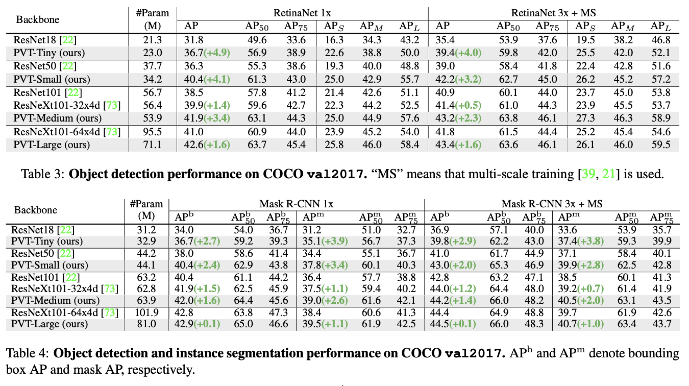

Pyramid Vision Transformer
Contents
Pyramid Vision Transformer#
Abstract#
최근 Vision Transformer(ViT)는 Image classification 분야에 transformer를 적용해 좋은 성과를 기록.
하지만 Transformer 특유의 Columnar한 구조때문에 Dense Level의 task에 적용하기에는 한계가 있음.
Pyramid Vision Transformer는?
Porgressive shirinking pyramid 구조를 사용해 이미지의 다양한 resolution의 feature를 학습할 수 있음.
고해상도 feature 학습을 위해 spatial reduction attention(SRA) 을 적용해 computational cost를 절약함.
CNN의 inductive bias가 높다는 이점과 transformer의 global attention의 이점을 모두 취함.
Dense Level의 vision task(object detection, segmentation)등에서도 좋은 성능을 보임.
Introduction#
CNN Architecture는 vision 분야의 다양한 task에서 이미 대단한 성능을 보여줌.
그러던 중 최근 Image Classification 분야에서 transformer를 적용한 ViT의 등장, 좋은 성능을 기록.
하지만 ViT는 columnar structure라 patch 자체가 동일한 resolution을 갖게 되고 결국 fine한 level의 task의 적용에는 부합함.
PyramidVisionTransformer(PvT)는
이미지 patch를 작은 size로 만들어 high resolution의 이미지를 학습할 수 있음.
서로 다른 patch size를 가지는 progressive shirinking pyramid 구조를 사용해 다양한 size의 feature를 학습할 수 있음.
spatial-reduction attention구조를 적용해 고해상도의 feature를 학습할 때 resource를 절약할 수 있음.
결국 PvT는
CNN 구조에는 없는 global receptive field를 학습.(attention mechanism)
Transformer 구조에는 없는 pyramid 형태의 학습으로 기존의 dense prediction task에 적용 가능.
Convolutional free한 구조로 다양한 task에 적용할 수 있음.
Method#
Overall Architecture#
서로 다른 scale factor를 갖는 4개의 stage로 구성
각 stage는 Patch Embedding Layer와 Transformer Encoder Layer로 구성
e.g. 1_st stage:
\(H*W*3\) shape의 이미지를 \(\frac{HW}{4^{2}}\)(patch size : 4 * 4 * 3) 개의 patch로 tokenize
flatten + linear projection. output size : \(\frac{HW}{4^{2}}C_{1}\)
elementwise sum by positional embedding
transformer encoder. output size : \(\frac{HW}{4^{2}}C_{1}\)
stage별 output size
stage
1
2
3
4
output size
\(\frac{HW}{4^2}\)
\(\frac{HW}{8^2}\)
\(\frac{HW}{16^2}\)
\(\frac{HW}{32^2}\)
Pyramid Structure for Transformer#
patch embedding layer에서 feature map의 scale을 조절.
Layer를 깊게 쌓아 progressive shirinking strategy를 사용.
Transformer Encoder#
Encoder Layer = Attention Layer + Feedforward Layer
ViT와 다르게 patch의 resolution이 매우 작으므로(e.g. 44, 88) channel 수가 linear하게 증가, computational cost도 linear하게 증가
이 점을 보완하기위해 Multi-Head Attention Layer를 Spatial-Reduction Attention Layer로 교체
SRA Layer
attention operation을 수행하기 전에 key와 value의 scale을 \(\frac{1}{R}\)배로 줄임.
Output size : \(\frac{H_{i}W_{i}}{R^{2}}C_{i}\)
요약 정리#
Model Details#
Task Details#
classification의 경우, model의 top에 fully connected layer 추가
pixel level prediction의 경우,
ImageNet 데이터로 pretrained
Pyramid 구조의 output feature map을 upsampling layer에 사용
dense prediction task의 경우 input image의 size가 arbitrary하므로 position embedding을 bilinear interpolation해 사용
Experiments#
In image classification
비슷한 paramater의 모델 기준으로 CNN backbone(e.g. ResNet) < PvT
FLOPS : 단위 시간도안 이루어지는 floating point 연산 수, a.k.a. inference 속도)
비슷한 complexity의 transformer 모델에 비교해도 PvT가 약간의 성능 향상
Dense Prediction task뿐 아니라, image classification분야에서도 pyramid 구조가 효과적임
Object Detection & Instance Segmentation
In object detection, PvT + RetinaNet > ResNet + RetinaNet
In instance segmentation, PvT + Mask R-CNN > TesNet + Mask R-CNN
PvT-Large의 경우, ResNext보다 20% 적은 parameter로 더 좋은 성능을 기록

Semantic Segmentation
PvT + Semantic FPN > ResNet + Semantic FPN
PvT-Large의 경우 mIoU가 44.8 기록, 이는 ADE20K Dataset의 SOTA와 근접한 수치
Dense Prediction Task에서도 CNN에 근접, 능가하는 성능을 보여줌
Pure한 Transformer구조만 사용한다면?
DETR(Detection with Transformer) in Object Detection
Detection task를 위한 pure한 transformer network
Trans2Seg in Semantic segmentation
Segmentation task를 위한 pure한 transformer network
Result
PvT + DETR > ResNet
PvT + Trans2Seg > Resnet
Pure한 Transformer구조도 dense prediction task에서 잘 동작함!
Ablation Study#
Q1. Pyramid Structure는 정말 효과가 있는가?
Test.
ViT에 작은 Size의 patch를 넣은 결과와 비교
ViT-4 patch는 OOM, ViT-32 patch < PvT-small
A. Pyramid Structure는 효과가 있다.
Q2. Deeper vs Wider
Test.
CNN architecture에서도 자주 등장하는 주제.
PcT small network의 hidden dimension을 기존보다 1.4배 upscale

Result : Wider PvT-small < Deeper PvT-small
A. Deeper > Wider
Q3. Pretraining의 이점은 존재하는가?
Test.
Blue line : Without pretrained / Red line : With Pretrained
Result : Blue < Red
A. Pretraining의 이점은 존재한다.
Q4. PvT vs Non Local CNN
Test.
CNN 대비 PvT의 장점은 global attention을 볼 수 있다는 점.
그렇다면 CNN에 Global Filter를 넣으면?(e.g. GCNet)
A. PvT > Non Local CNN(ResNet + Gcr4)
why?
PvT의 경우 Global attention이 Network의 전반적으로 이루어지지만, ResNet + Gc r4의 경우, 특정 resolution(r4)에서만 연산이 이루어진다는점
CNN의 경우 학습된 filter가 fix되어 global feature를 계산하지만, Transformer의 경우 input relation을 보고 global feature를 dynamic하게 계산한다는점
Conclusion#
Pure한 transforer로 dense prediction task에 응용 가능한 PvT
아직 transformer가 CNN Backbone으로 이루어진 SOTA를 넘어서기는 어렵지만, vision tak에서의 transformer모델 연구가 초창기인만큼 무궁무진한 가능성이 있다.
그 중 PvT는 Good starting point.
Author by 지승환
Edit by 김주영